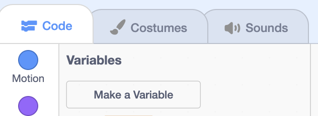
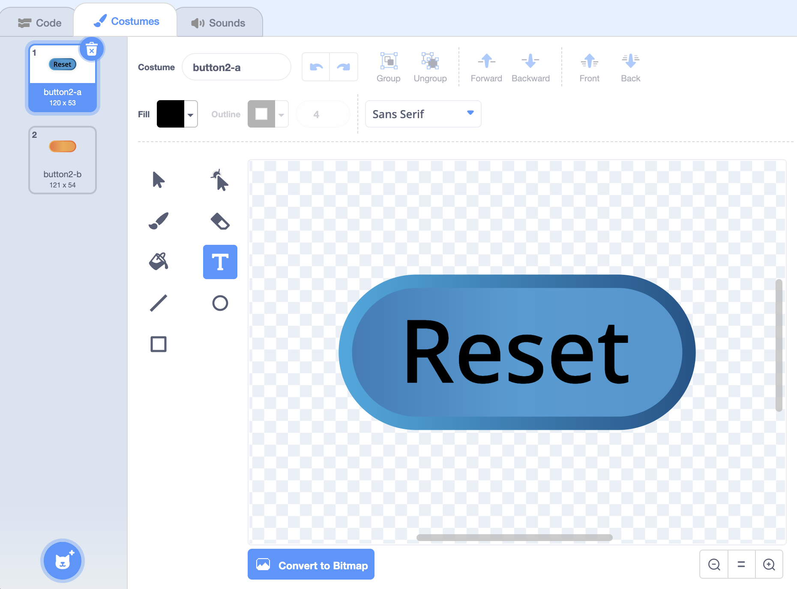
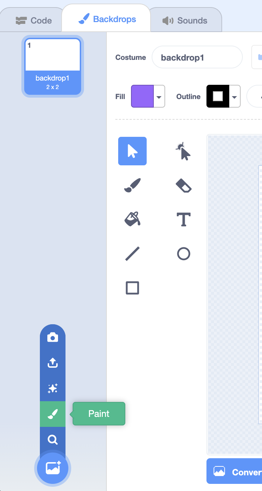
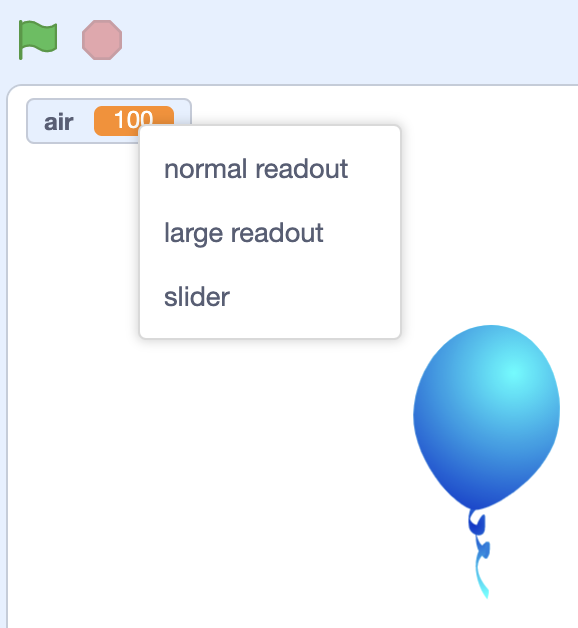

Variables
- So far, we’ve used values that are pieces of information in our program that we can use to make decisions or as input to functions.
- When these values are stored in our program so we can use them later on, they can be called variables.
Counting Cat
- Let’s build the Counting Cat example.
- We’ll look in the Variables section of blocks, and we see this button labeled “Make a Variable”:

- When we click this, we are asked for the name of the variable, so we’ll type in “count”, since we want to use it to store a count.
- We can also decide whether this variable is available for all sprites to use or change, often called a global variable. Or, we could make this variable available only for this sprite, also called a local variable. We’ll choose “For all sprites” for this “count” variable.
- Now, we see an oval “count” block available, with a check box to its left. The check box will tell Scratch to show the value, or what’s stored inside our variable, on the upper left of the stage. We can uncheck it so that the value is hidden on the stage.
- We can add blocks for our cat to count the number of times it is clicked:
when this sprite clicked change [count v] by (1) say (count) for (1) seconds- The “change” block will increase the value of the “count” variable by 1.
- Then, our cat will say the value of the variable.
- We can add another sprite, “Button2”, which will be a button we can use to set the count back to 0. We’ll use the Costumes tab to add text to our button, so it’s labeled “Reset”:

- We’ll add these blocks for the reset button:
when this sprite clicked set [count v] to (0)- Now, when this button is pressed, the value of 0 will be placed inside the “count” variable, replacing whatever was there before.
Chase the Star
- Now, we can make a game with the hedgehog that tracks our score, Chase the Star.
- We’ll delete our sprites, and right-click or control-click on the “count” variable, and choose the “Delete” option to remove it as well.
- We’ll add our hedgehog, and tell it to point and move towards the mouse pointer:
when green flag clicked forever point towards (mouse-pointer v) move (5) steps - We’ll add another sprite, the star, and have it increase our score by one every time the hedgehog touches it. We’ll also have it go to a random position after it’s been touched:
when green flag clicked forever if <touching (Hedgehog v) ?> then change [score v] by (1) go to (random position v)- First, we need to make a new variable, and we’ll call it “score”.
- We’ll have the star constantly check if it’s touching the hedgehog with a forever loop, and whenever it is, we’ll increase score by 1.
- Finally, we’ll tell our star to go to a random position after.
- Now, we have a game where we can try to collect stars with our hedgehog.
- When the program starts, we probably want to set our score back to 0. We’ll do that with the hedgehog:
when green flag clicked set [score v] to (0) forever point towards (mouse-pointer v) move (5) steps- Notice that we want our “set” block outside of the “forever” loop. This way, it’s only set to 0 once, and be changed by the star after that.
- We can have our program change the backdrop and stop when we have a certain number of points, too.
- First, we’ll click on the Stage panel in the bottom right, and go to the Backdrops tab. Then we’ll click on the button with a plus sign on the bottom left, and choose “Paint” to create our own backdrop:

- We’ll add a green rectangle that covers the backdrop, and some text that says “You win!”. We’ll change the name of the backdrop to “Win”.
- Now, we want to make sure that the backdrop starts with the plain white backdrop, “backdrop1”, so we’ll add that to our hedgehog:
when green flag clicked set [score v] to (0) switch backdrop to (backdrop1 v) forever point towards (mouse-pointer v) move (5) steps - Then, in our star’s code blocks, we want to change the backdrop and stop our program once we’ve reached a score of 10:
when green flag clicked forever if <touching (Hedgehog v) ?> then change [score v] by (1) if <(score) = (10)> then switch backdrop to (Win v) stop [all v] end go to (random position v)- After we change the score, we want to add a condition that checks the value of “score”. If it’s equal to 10, then we’ll switch the backdrop. We’ll also use the “stop” block, under the Control section, which will stop everything in our program.
- Recall that we can get the “=” block in the Operators section, and the “score” block in the Variables section.
Bouncing Ball
- We’ll remove these sprites, and choose another backdrop, “Blue Sky”, for our next example, Bouncing Ball.
- We’ll add the ball sprite, and tell it to start falling, or moving downwards, until it reaches the ground:
when green flag clicked forever change y by (-5) if <touching color [#663600] ?> then stop [all v]- We’ll change the y position by negative 5, which makes our ball move down.
- Then, we’ll stop our program if the ball is touching the brown color in the ground of the backdrop. We’ll click the color and then the eyedropper in order to select the brown color.
- Now, when we click the flag, our ball falls. We can drag our ball back up to the top of the stage, and try it again.
- But this falling isn’t very realistic. A real ball starts falling slowly at first, and then faster and faster.
- Let’s have our ball move a variable number of steps every time. We’ll create a new variable called “speed”, since it will store the speed of falling, and we can make this variable available “for this sprite only”, since no other sprite needs to use it.
- Now, in the top left of our stage, we see that the variable is labeled “Ball: speed”, telling us what sprite it belongs to.
- For our ball’s code, we’ll increase the value of the “speed” variable as it falls:
when green flag clicked set [speed v] to (0) forever change y by (speed) change [speed v] by (-1) if <touching color [#663600] ?> then stop [all v]- First, we’ll set “speed” to 0. Then, we’ll change our ball’s y position by whatever that value is, which will be 0 at first.
- After that, we’ll change the value of “speed” by negative 1, which makes it more negative, so our ball moves down the stage more quickly.
- Our forever loop will run over and over, until the “stop all” block tells our program to stop.
- We can have our ball move up after it touches the ground, too:
when green flag clicked set [speed v] to (0) forever change y by (speed) change [speed v] by (-1) if <touching color [#663600] ?> then set [speed v] to ((speed) * (-1))- We can change the value of our “speed” variable from a negative number to a positive number by multiplying it by negative 1. Then, our ball will start moving up on the stage, but the “speed” variable will decrease by 1 every time again.
- Eventually, our ball’s “speed” will be 0, and then negative, and then it will start moving down the stage again.
- We can also have our ball lose a little bit of speed every time it bounces:
if <touching color [#663600] ?> then set [speed v] to (((speed) * (-1)) - (2))- When the speed changes from negative to positive, we can also subtract 2 from it, so the new speed is always a little less than before.
- Eventually, we’ll want the ball to stop moving, so we’ll need to add some more code for that.
- With variables, we can approximate the speed of a bouncing ball, to make its movement more realistic.
Balloon
- Let’s look at an example where the user can control the size of a ballon in Balloon.
- We have a ballon sprite, and we’ll create a new variable called “air”. On the stage, we can right-click, or control-click the variable, and change what the readout looks like:

- We can choose to show a large readout, but for now we’ll choose slider.
- Now, the user can move the slider to change the value of the variable. We can right-click, or control-click the slider, and choose “change slider range” so that there is a minimum and maximum value. For this, we’ll set the minimum value to 100 and the maximum value to 200, since the size should be somewhere between those two values.
- We’ll add code blocks to our balloon sprite that tell it to change its size:
when green flag clicked forever set size to (air) %- Now, after we click the green flag, our balloon will set its size to the value of the “air” variable, over and over again, even as we change the value with the slider on the stage.
- With these ideas, we can allow the user to control a variable directly to interact with our project or sprites.
Spiral
- Let’s see an example with the Pen extension, Spiral.
- We’ll have our cat move in a circle:
when green flag clicked go to x: (0) y: (0) point in direction (90) forever move (10) steps turn right (15) degrees- We’ll start in the center of the screen facing right, and move and turn to get the effect of moving in a circle.
- We’ll add the Pen extension by using the blue button in the bottom left of the interface. Then we’ll erase everything, and put the pen down to start drawing:
when green flag clicked go to x: (0) y: (0) point in direction (90) erase all pen down forever move (10) steps turn right (15) degrees wait (0.05) seconds- We’ll also have our cat wait just a fraction of a second between each step, so we can see how it draws a circle.
- Now, let’s create a new variable called “steps”. We’ll set it to 0 at first, and tell our cat to move by the value of the variable:
when green flag clicked go to x: (0) y: (0) point in direction (90) erase all pen down set [steps v] to (0) forever move (steps) steps change [steps v] by (0.5) turn right (15) degrees wait (0.05) seconds- Notice that we’re also increasing the value of the “steps” variable a little bit, by 0.5, every time we move. So each time we move, we’re moving a bit further. And this turns out to look like a spiral.
- With loops, variables, and the pen, we can draw some interesting art in our programs.
- More generally, with variables, we can keep track of information in our programs and change or use them later, to make even more powerful games, animations, and stories than before.